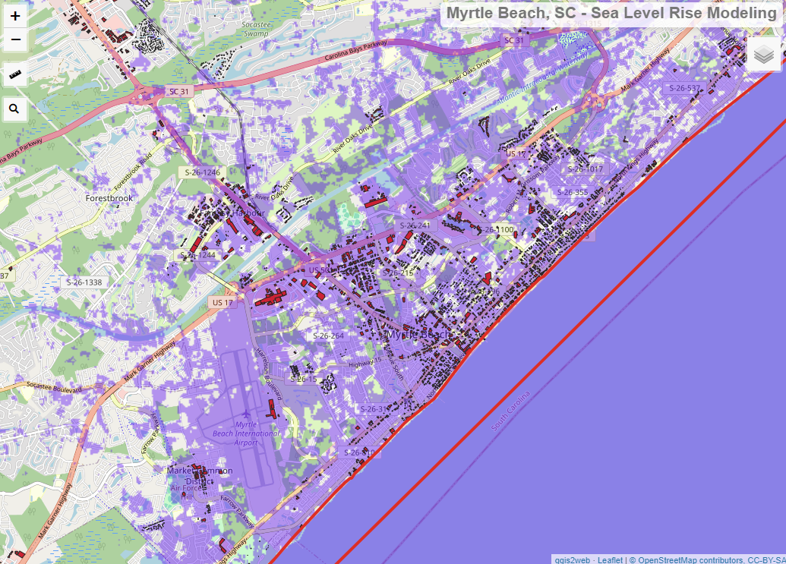
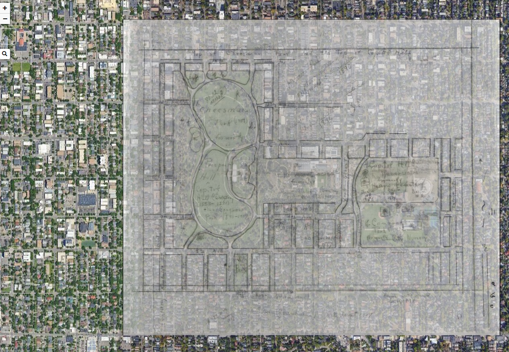
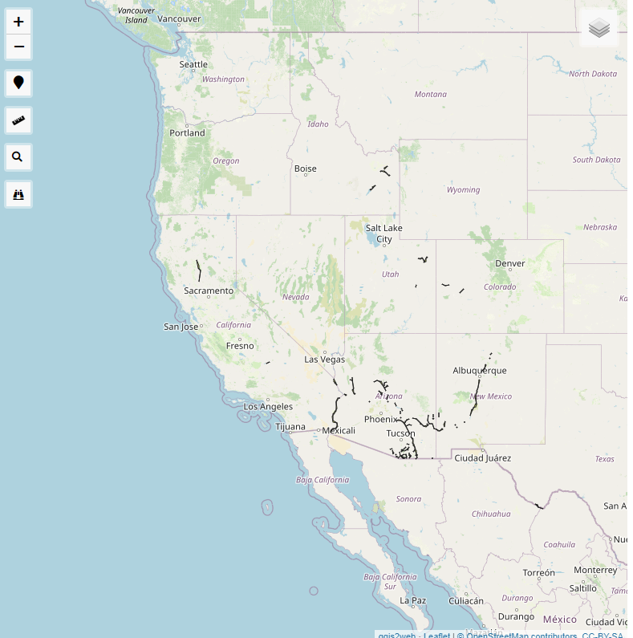
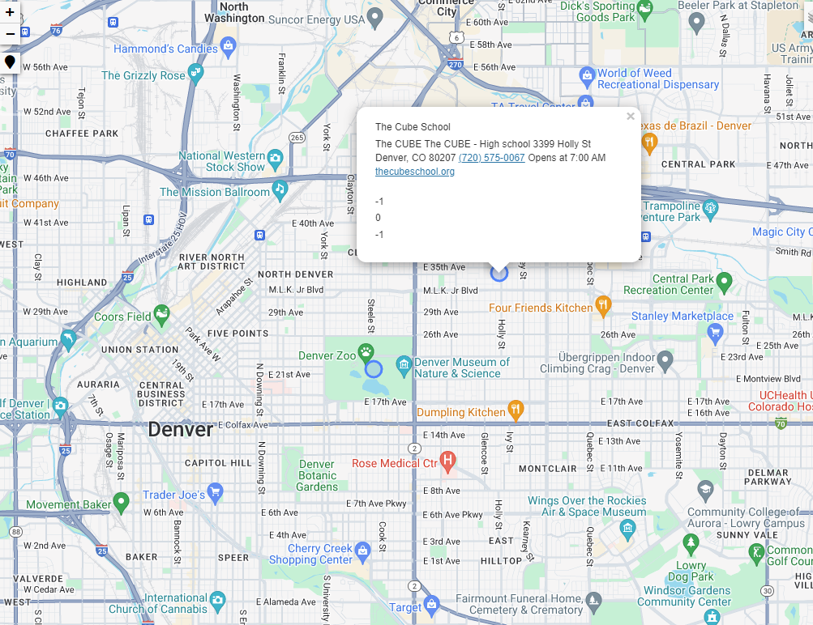
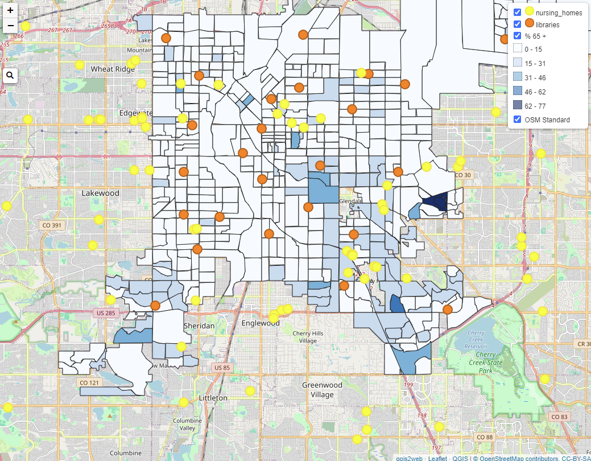

Projects
- MB Flooding  - A brief exercise in modeling flood risk based onc urrent forecast sea level rise, SRTM DEM and OSM footprints available.
- Historical Cheeseman - Here I've overlaid a hand drawn layout of the historical Cheeseman Park, georectified over a satellite imagery of contemporary Cheeseman Park to showq the landscape and use changes as a brief exercise in digital archeology
- Conservation boundaries for the Yellow-Billed Cuckoo 2020 - Map showing the uudpated conservation areas provided by the USFWS for Greenwood Wildlife Rehabilitation
- Cube School - A quick outline used for the Cube School's students over 2020 as a 'Virtual Field Trip' to teach their students about GIS basics and point pattern analysis.
- DPL Seniors - Map outlining the location of 65+ residents in Denver, Nursing Homes, and Libraries to assist the Denver Public Library with efficient service for senior residents using their Mobile Library program.